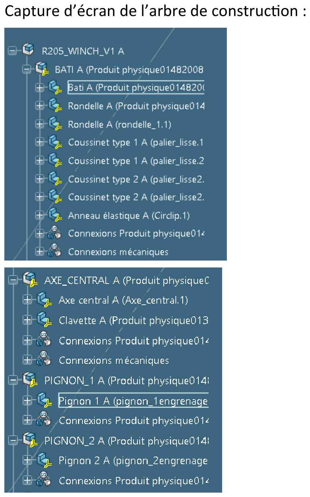
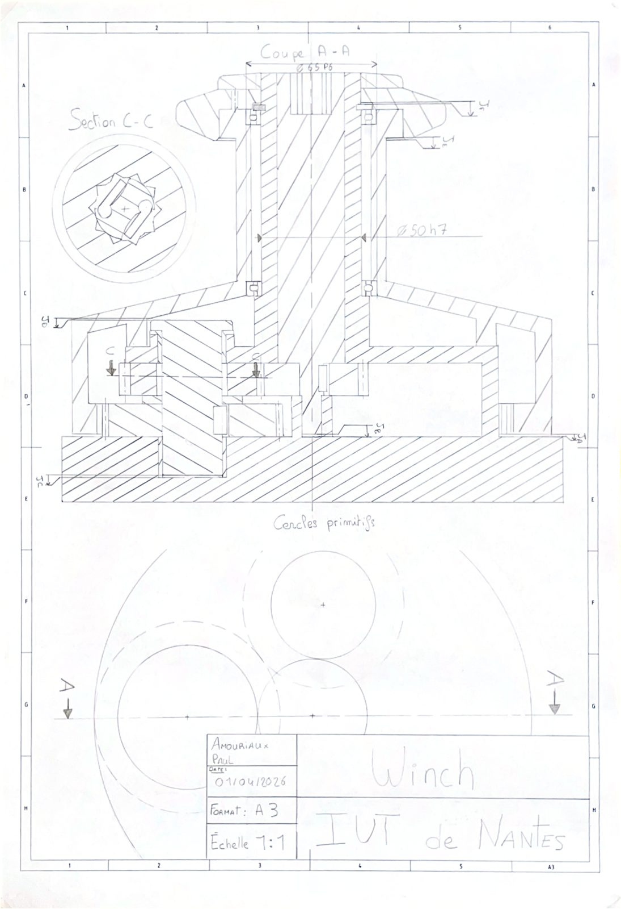
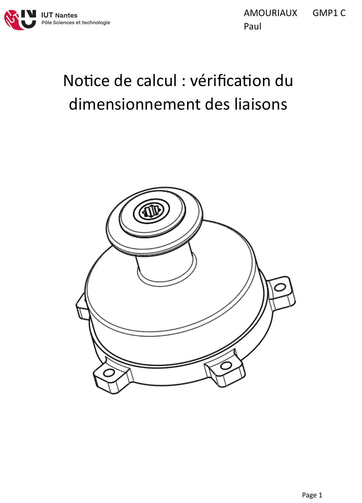
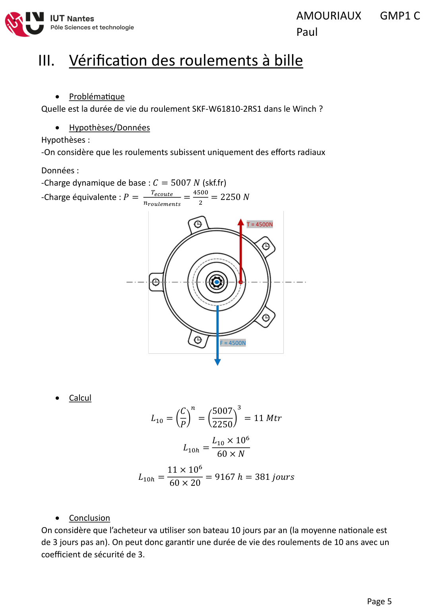

Contexte et objectif
Le winch est le treuil qui permet à un équipier de voilier de reprendre l'écoute d'une voile malgré un effort de 4 500 N. L'objectif de ce projet était de concevoir intégralement le mécanisme sous Catia : un train d'engrenages à deux vitesses logé dans le tambour, avec des cliquets anti-retour qui sélectionnent automatiquement le rapport selon le sens de rotation de la manivelle, puis de valider le dimensionnement de chaque liaison par le calcul.
Conception CAO
L'assemblage complet compte 23 références : bâti, axe central claveté, six pignons, cliquets, roulements, coussinets, flasque et bouchon. La maquette numérique intègre les connexions mécaniques (pivots, encastrements) pour vérifier les mobilités, et l'ensemble est documenté par une mise en plan A3 avec coupes, sections, nomenclature complète — doublée d'un plan à main levée réalisé en amont.



Notice de calcul : vérification des liaisons
Chaque liaison critique a été vérifiée selon une méthodologie systématique (problématique → hypothèses/données → calcul → conclusion) :
- Fixation au bâti : loi de Coulomb avec coefficient de sécurité de 2 → 2,4 kN par vis, très en deçà de la capacité des vis M15 retenues.
- Roulements à billes SKF W61810-2RS1 : durée de vie L10h de 9 167 h, soit 10 ans d'usage plaisance avec un coefficient de sécurité de 3.
- Clavettes : vérification de la pression de matage sur les trois clavettes — l'une (axe central – pignon 1, 357 MPa) doit être redimensionnée, une autre est à la limite.
- Cliquets : pression de contact validée pour l'un (26 MPa), matériau à revoir pour l'autre (47 MPa, proche de la limite du bronze).
- Paliers lisses : pression de 4 MPa, largement admissible.


Ce que ce projet m'a apporté
- Concevoir un mécanisme complet à train d'engrenages, du schéma au modèle 3D détaillé.
- Produire des mises en plan normalisées complexes (coupes multiples, nomenclature).
- Dimensionner des liaisons réelles : matage, durée de vie de roulements, assemblages vissés.
- Porter un regard critique sur ma propre conception et proposer des corrections chiffrées.